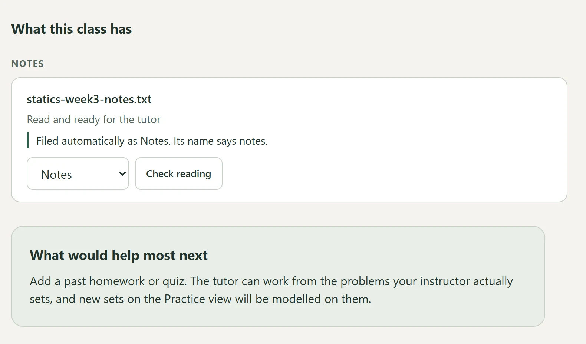

Optimized Learning
An AI study app I’m building. It sorts each class’s materials into a database, and its tutor answers questions by citing the actual course files.
- Role
- Full-stack developer
- Dates
- Apr 2026–present
- Stack
- Python, SQLite, BM25
- Status
- In development
Summary
A Python pipeline sorts 8 types of course materials per class into a 17-table SQLite database. For each question, the AI tutor uses BM25, a keyword-ranking method, to pull up to 20,000 relevant characters. That lets it cite the course files in its answers.
Problem
Most study tools give every student the same generic tutor, whether it’s week 1 or week 14. I wanted one that teaches only from what my course has actually covered and follows my instructor’s notation. It should get closer to my real course with every lecture, homework, or quiz I give it.
Design
- A Python pipeline sorts up to 8 types of course materials per class into a 17-table SQLite database.
- The tutor uses BM25 retrieval to pick up to 20,000 relevant characters per question, so it can cite course files.


The design picks BM25 keyword scoring over embeddings, the meaning-based vectors many AI search tools use, on purpose. The first version had two real bugs. The student’s question never reached the code that picked material, and files were read in alphabetical order, so a file late in the list could be cut off entirely. A vector database wouldn’t have fixed either one, and it wouldn’t have told the tutor what it left out. BM25 scores each passage against the question within that one class and picks the same passages every time. It fills the character budget in turns across categories, so a whole textbook can’t crowd out the syllabus. The cost is that it can miss synonyms. If a test set of real questions shows that hurting answers, I’ll revisit it.
The database tracks classes, uploaded files and their extracted text, tutor conversations, the exact passages each answer was given, syllabus deadlines, and practice sets.
I directed AI coding assistants (Claude and Codex) and reviewed their work. The design decisions, a dated log of who built what, and the assistants’ reviews of each other’s work are recorded in the repository.
Testing and iteration
- Each of the 8 schema upgrades (changes to the database layout) takes a verified snapshot first and can be rolled back.
- The app has 960+ automated tests, 846 in Python and 122 for the front end.
Results
- Course material types: 8 per class
- Database: 17 SQLite tables
- Retrieved context: up to 20,000 characters per question
- Schema upgrades: 8, with backups and rollback
- Automated tests: 960+
What I’d change
Next up are progress tracking and full backup and restore. I also want to build a set of real questions to test whether keyword selection misses things embeddings would catch. Once the code is ready to release, it will be public under AGPL-3.0.